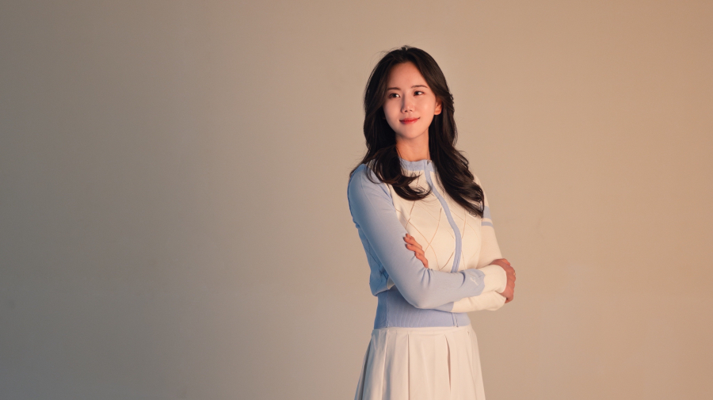
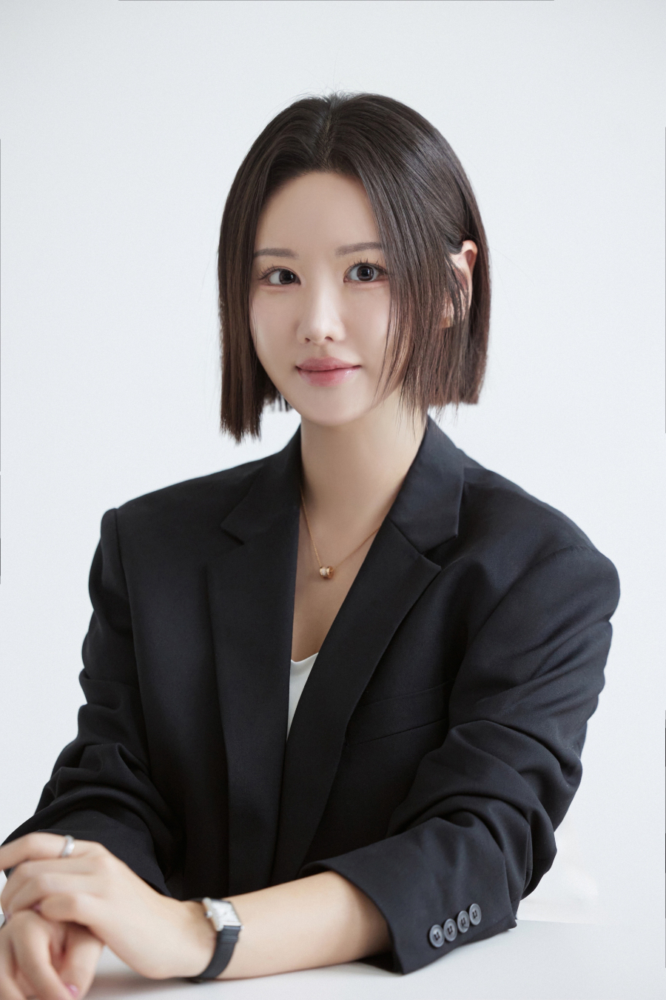
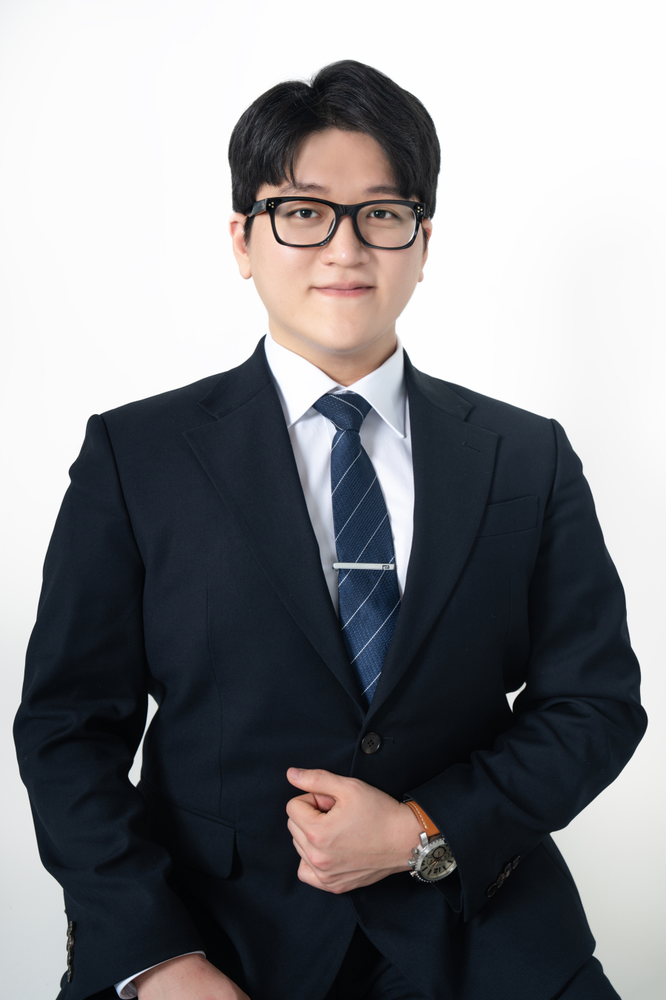
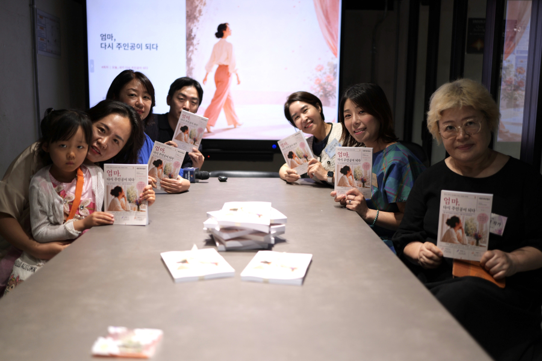
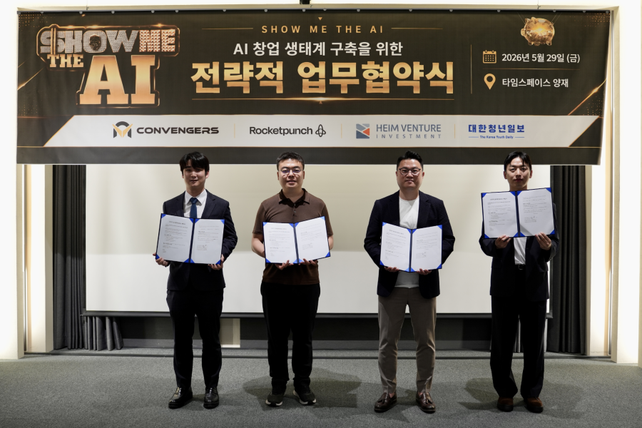
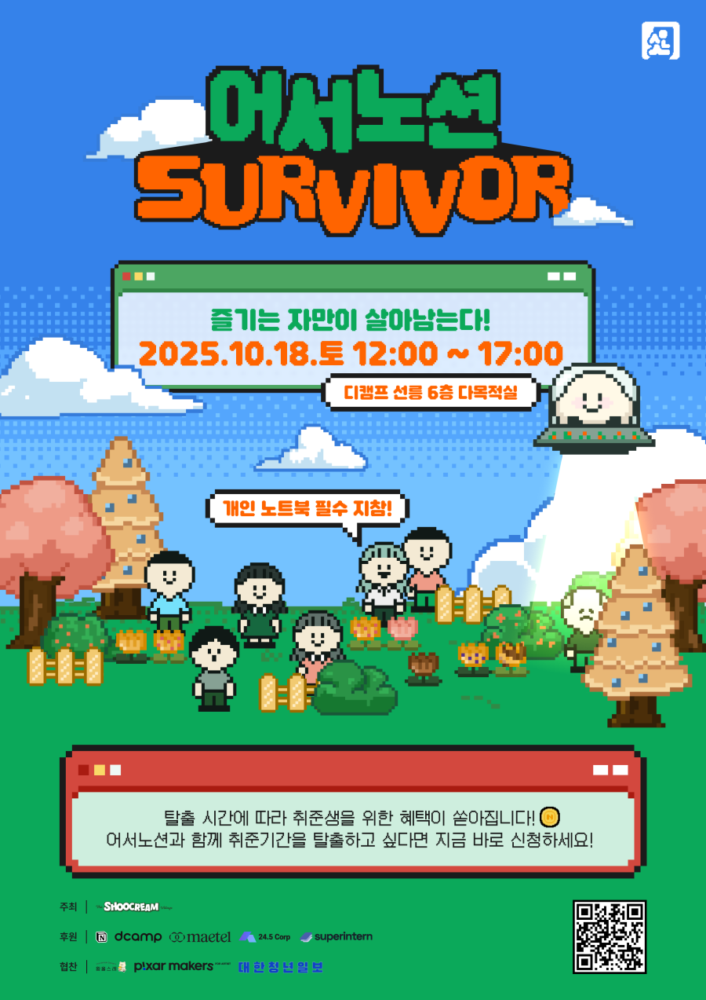

Names to Know
필드 위의 프로골퍼, 두바이의 부동산 전문가, AI 창업 무대의 주인공들. 언론이 먼저 알아본 이름과 이야기.
경력보다, 그 사람의 선택이 더 궁금한 사람들.

프로골퍼 · KLPGA 정규투어 출신
“스윙을 바꾸는 것도 중요하지만 저는 그 사람의 마음을 먼저 이해하고 싶어요.”
고나혜 프로, “골프는 내 인생을 바꾼 언어입니다”

두바이 부동산 전문가
“I thought real estate wasn’t just an asset, but rather a way to design the way people live.”
Dubai Real Estate: Global Expert Nawon Stella Lee Delivers “Real-World” Insights

애스엔비즈 대표
“기회는 사람이 사람에게 주는 거다.”
기회는 기다림이 아니라 선택에서 시작된다, 애스엔비즈 김민승 대표의 방식
사람이 모이고, 기사가 된 자리.

스토리북 프로젝트
엄마라는 역할에 가려져 있던 한 사람의 이야기를 책으로 엮어낸 시간. “책은 끝이 아니라 새로운 시작입니다.”

AI 창업 데모데이
AI 창업가와 투자사, 스타트업 플랫폼, 미디어가 손잡고 청년 AI 창업 생태계 확장에 나섰습니다.

청년 실전 프로젝트
스펙보다 실력. 청년들이 노션으로 직접 문제를 풀며 “해봤다”고 말할 수 있는 경험을 쌓는 프로젝트.
자기 분야를 자기 언어로 말하는 사람들.